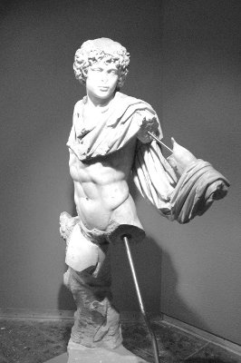

Eski Romalılar; ölüm cezasına çarptırılan bazı suçluları, halkın tıkabasa doluştuğu arenaya getirirler ve yırtıcı aslanları suçluların üzerlerine salıverirlerdi!..
Gene bir gün imparator Sezar'ın da izleyici olarak bulunduğu Büyük Arena'da, kapatıldıkları dehlizin kapısını açıp yırtıcı aslanları mahkûmların üzerine salıverdiler... Dışarı fırlayan azgın ve yırtıcı hayvanların en iriyarısı ve gösterişli olanı, bir anda bütün izleyenlerin ilgi odağı oldu. Çünkü çok kalın ve adaleli bacakları, gür yeleleri, ışıl ışıl parlayan gözleri vardı onun. Durduğu yerde duramayan aslan, korkudan titreyen mahkûmlar arasındaki Androklus adlı bir köleyi görür görmez birden durgunlaştı; onu uzun uzun süzmeye başladı... Sonra da kuyruğunu hafiften sallaya sallaya, tir tir titreyen Androklus'un üzerine doğru ağır ağır yürümeye başladı. Yanına varınca da kölenin kollarını, bacaklarını başıyla sürtünerekten okşadı; ellerini ağır ağır yaladı... Bir süre sonra da, kırk yıllık iki candan dost gibi Androklus'la aslan, birbirleriyle tatlı tatlı oynaşmaya başladılar... Bu sahneyi tribünlerden izleyen binlerce insan, gördükleri karşısında öylece donakaldılar. İmparator Sezar da şaşkınlık içindeydi... Biraz kendine geldikten sonra arenadan ayrıldı. Ölüm mahkûmu Androklus'u huzuruna getirtti. Zavallı kölenin de zaten aradığı buydu. Hiç çekinmeden hem kendisiyle hem de aslanla ilgili bütün serüvenini, baştan sona imparatora anlatmaya başladı Androklus.
Androklus; Roma İmparatorluğu'nun sömürgesi Afrika'yı yöneten acımasız, zorba valinin bir kölesiydi. Ne var ki bu vali, bütün Afrika kıtasını mallanıp sömürdüğü yetmiyormuş gibi, buyruğu altındaki yerli halka, aklına esen her türlü insanlıkdışı işkenceyi uygulamaktan da geri kalmıyordu! Kölelerinden ve çevresinden, kim olursa olsun, kaşını kaldıranın kellesini uçurtuyordu! Tabii bunları imparator Sezar bilmiyor, diye düşünüyordu Androklus. Bir köle olarak bu zorba valiyle orada teke tek başa çıkamayacağını anladığı için, onun yanından kaçmıştı. Artık bundan sonra yapabileceği tek şey; Roma'daki Sezar'a ulaşıp valinin zorbalıklarını ona duyurabilmekti!.. İşte bu yüzden, ölümü göze alarak, çöl bayır demeden yollara düşmüştü. Valinin askerleri de her yerde onu aramaya başlamışlardı. Çöllerde çoğu kez aç susuz, can derdiyle cebelleştiği bir sırada; hem askerlerden hem öldürücü sıcaktan korunmak için ilk gördüğü mağaramsı bir kuytuya atmıştı kendini; azılı ve heybetli bir aslan da onunla aynı anda içeri dalmıştı! Korkudan bayılıp düşeceği sırada o iriyarı aslan; acı acı çığlıklar atarak Androklus'un önüne gelip çömelmiş, kanlar içindeki ön ayağını uzatmıştı ona. Androklus, çekine çekine de olsa eğilip baktığı hayvanın kanlı pençesinde büyük bir diken görmüş ve onu hemen çekip çıkarmıştı! Böylece acılarından kurtulan aslanla Androklus, artık canciğer dost olmuşlardı. Aslan, çevrede avladığı hayvanların etinden Androklus'a da getirmeye başlamıştı. Ne var ki bir an önce Roma'ya ulaşması sözkonusu olduğu için Androklus, aslanın dışarı ava çıktığı bir sırada mağaradan kaçmıştı.
Bu kaçışı sırasında Romalı askerlere yakalanmamaya çalışmışsa da birkaç gün sonra onların eline düşmüştü. Askerler; kural gereği, yakaladıkları kölenin halk önünde herkese ders olacak şekilde cezalandırılması için, onu apartopar Roma'ya getirmişlerdi. Bu arada aslan da, fellik fellik can dostu Androklus'u aramaya başlamıştı... Ne var ki o da Romalı askerlerin eline düşmüştü. Askerler de onu alıp arenaya getirmişlerdi...
İsyancı kölenin bu anlattıklarını dinleyen imparator Sezar, çok duygulandı ve bu öyküyü bütün ayrıntılarıyla Romalı halka da duyurdu. Bu olaydan büyük bir coşkuya kapılan halk da sokaklara ve meydanlara döküldü. Köle Androklus'un bağışlanması ve özgür bir insan olarak dolaşabilmesi için bir araya gelen kalabalıklar, coşkulu ve içten gösteriler düzenlediler. Bunun üzerine imparator Sezar da köleyi bağışladı. Ve aslanı da artık köleliği biten Androklus'a armağan etti.
Androklus'la dostu aslan Roma sokaklarında iki gün iki gece, kalabalıkların arasında salına salına dolaştılar. Meydanlara dökülerek ilk kez bir köleyi bağışlatma başarısını kazanan halk, bu görkemli iki dostun üstüne çiçekler yağdırdı ve onlara armağanlar sundu.
"Yaşasın aslan! Yaşasın özgür Androklus!.." gibilerden coşkulu sloganlar attı... Ve bu olay; Romalı halkın belleğinden hiç silinmedi. Yüzyıllar süresince de bu serüvenin anısı; "insanın insana köleliğinin" kaldırılması simgesine dönüştü. Ve bu simge; zaman içinde yalnızca Roma sokaklarında değil, dünyanın bütün meydanlarında dile getirilen en yakıcı istem olarak varlığını hep sürdürdü...

Antonius